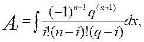
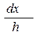
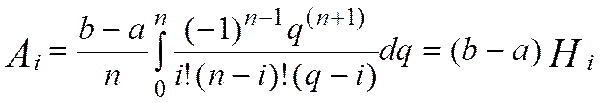
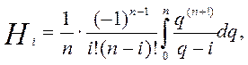
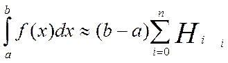

КВАДРАТУРНІ ФОРМУЛИ НЬЮТОНА-КОРТЕСА
Нехай під час побудови інтерполяційного многочлена, розбиття виконували так, щоб вузли були рівновіддаленими. Величина кроку розбиття обчислюється за формулою h = Введемо позначення:
q = та q=q(q - 1)…(q - n). Підставимо q у формулу для обчислення коефіцієнтів (3).
Тоді вона набуде такого вигляду: 
i = 0,1,…n.
Врахуємо, що dq = , тобто dx = hdq =При цьому x = маємо q = 0, а при x = З урахуванням наведених фактів, перепишемо останню формулу для коефіцієнтів так:
,
де
 (i = ).
Сталі називаються коефіцієнтами Кортеса.
Квадратурна формула (2) з урахуванням значень , (4) перепишеться так ,
де (i = 0,1,…,n). Розглянемо окремі випадки застосування формул Ньютона-Кортеса (5).